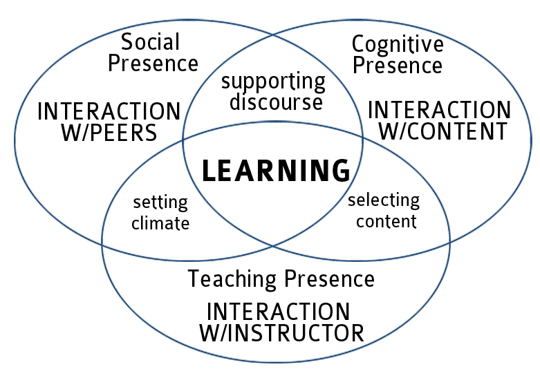

Unit 3: Online Community and Interaction
I. Learning Community and Interaction
In a traditional classroom, students interact with each other in a classroom setting. This face-to-face interpersonal contact helps students build friendships and create learning groups, thus a learning community naturally and gradually comes into being. However, an online learning environment does not directly have this type of physical setting or atmosphere unless the instructor starts to create and facilitate a community-like learning context and climate through ample varieties of interactive opportunities.
Building a community is critically important for online courses to enhance online instructional and learning outcomes. The essential way to build up a student-friendly and learning-enhanced community is to create interactive opportunities and effectively facitiate interaction online for students.
This section introduces two pedagogical models which draw upon experimental research studies: a community of inquiry model and a learner-centered interaction model. Based on these two important pedagogical frameworks, a learning-enhanced online community model is presented to illustrate how online interaction can enhance online presences and then build up an effective online learning environment.
According to Rourke, Anderson, Garrison, and Archer (2001), a community of inquiry is comprised of three overlapping key elements: cognitive presence, social presence, and teaching presence. Deep and meaningful learning is generated through the interaction of these three core elements within a community.
Building a community is essential for online courses. It is important to emphasize the joint development of cognitive presence, social presence and teaching presence in order to foster community in the class. This encourages students to feel comfortable in the course, establishing relationships and openly discussing course content with peers. Cultivating a strong sense of community takes time, commitment and good planning. Some suggested activities to help build a social learning community in an online course include: Ice-breakers/introductions, case studies, group projects, group discussions, role-playing activities, and much more.
Developing opportunities for online interaction is essential to building up an online learning community and enhancing the existence of online social presence, cognitive presence and teaching presence. Students are greatly motivated by the opportunities for online interaction. Moore (1989) identified three types of interaction that are important for learning and engagement, including learner-content, learner-instructor, and learner-learner. These three types of interaction are subsequently widely studied and Moore's categorization of online interactions has become one of the most cited framework when examing online interaction. Please note that although Moore's (1989) proposed three types of interaction have great impact in the field of distance education, there are also other types of online interaction widely discussed by researchers such as learner-self interaction (Soo & Bonk, 1998), learner-interface interaction (Hillman, Willis, & Gunawardena, 1994) , and vicarious interaction (Sutton, 2001).
It is also worthy to note that none of the three modes of interaction functions independently in practice and each type of interaction involves certain elements from other types of interaction. Swan (2003) brought up a new perspective to view the three forms of interaction and she merged the framework of interactions with that of Rourke, Anderson, Garrison & Archer's (2001) "Community of Inquiry". According to Swan (2003), cognitive presence in the model of Community of Inquiry can be equated with interaction with content, teaching presence can be equated with interaction with instructors, and social presence represents interaction among students in the model. The three equations provide a good representation of how all three work together to support learning online (see below). At the same time it should be remembered that both teachers and students have social presence, that in many online courses, both teachers and students teach, and that learning is always learning of content.

Online interactions are essential to a successful and satisfactory online learning experience and the development of online interactions will help promote the building of online community. In the following sections, we will mainly discuss the different types of interaction in the online learning environment.
II. Interaction: Learner-Content
Learner-content interaction results from students examining/studying the course content (Moore & Kearsley, 1996). Learner-content interaction is one of the most common forms of interaction in distance education. Careful selection and arrangement of materials and activities for online instruction can increase the likelihood that learner-content interaction will help learners achieve course objectives.
Learner-content interaction is essential to the educational process. The intellectual engagement of the learners with material is basic to all educational processes (Moore, 1989). By interacting with the subject matter the overall understanding of the learner changes and personal construction of knowledge is enabled.
Stimulate prior knowledge and "hook" your students into engaging with new concepts. In the MSU course template, the Perspective section serves to grab the students' attention and make the content relevant to their lives.
Use video or audio to deliver content. Vary the way you deliver content using a variety of methods that support students diverse learning styles. You can use certain tools to create video or audio components or use outside video resources such as YouTube, TeacherTube, Khan Academy, etc.
Create or find graphic representations of content for students by integrating charts, graphs, process maps, and timelines into your course to make complicated ideas visual. Resources can be found at A Periodic Table of Visualization Methods and Many Eyes.
Add interactive elements to encourage active learning. These can be as simple as rollovers or hyperlinks to keep the visual design simple yet engaging.
Exercises and Activities: You should offer exercises and activities for students to engage with course content. This is helpful for students to self-check their understanding of concepts through ungraded tools.
Discussion: As the center of interaction and learning, online discussion is regarded as the core of an online course. An online discussion forum is a place where students share resources, negotiate meanings, and construct knowledge collaboratively.
Group Work/Projects: In online courses, group work provides opportunities for students to interact with each other as well as with the course content. Students can ask questions, explore ideas, and solve problems together by working in groups.
Consider your learning objectives and select technology tools that will enhance your objectives.
Use video or multimedia presentations coupled with opportunities for discussion and student engagement with the content.
Be mindful of distracting or flashy media elements in your multimedia presentations that will pull students attention away from the content.
Consider the role of advance organizers (also known as graphic organizers) to introduce sections of your course content.
Define expectations for students to post to a discussion forum, blog or other tool. You may want to evaluate postings by creating a rubric that includes frequency of posts and responses, relevance of posts to course subject, and writing conventions.
Offer many opportunities for students to self-check and reflect on their understanding of new concepts and keep them engaged as new content is introduced.
III. Interaction: Learner-Learner

Student-to-student interaction is where students take information that they have read or listened to and begin to build their understanding through dialogue with others. It is through using information that it becomes knowledge. In online classes, student-to-student interaction usually occurs in discussion forums or group activities although you may also want to consider audiovisual story-telling, chats, wikis, blogs, role-playing, and web conferencing.
The learner-to-learner interactions serve two main purposes:
Community Building: Try to offer different types of collaborative activities such as pairing students, grouping students together in different sized groups and selection combinations, as well as setting up space for students to ask other students questions.
Connections to Content: Students benefit from working with each other to enhance their understanding of content and tools and processes should be defined to provide support collaborative activities. Discussion should be built into the course so that meaningful dialogue and questioning may occur (Boettcherr & Conrad, 2010).
Partner or small group assignments that support collaborative critical thinking and problem solving.
Peer review activities that guide students to interact with each other's work.
Open forums for students to share ideas with each other such as wikis, blogs, Discussion Boards, Cyber Cafe, etc.
Develop team-building activities such as sharing biographical information or stories and feedback on assignments. Create an environment for socialization (Hanna, Glowacki-Dudka & Conceicao-Runlee, 2000).
Consider your students' comfort level with technology. This plays a large role in students' ability to embrace the use of digital tools to collaborate and connect with each other related to the course.
Determine where learner-to-learner online interactions will add the most value to different areas of your course content.
Build up to integrating group projects into your course. You may want to start with partner work and progress to small groups, depending on how successful they are.
Develop a pattern for including opportunities for learners to connect with each other in your course. Consistency helps. Offer a variety of options so that different learner preferences are respected.
Embrace tools that support collaboration and knowledge sharing.
Blogs are a great way for students to share their thoughts with others in the course and get feedback on ideas or questions (Watch a video tutorial).
Blackboard Collaborate is a virtual classroom tool that allows instructors to conduct classes fully online in real-time. See more information here: http://www.montclair.edu/oit/documentation/blackboard-collaborate/
Blackboard IM (Wimba Pronto) is an academic based instant messaging platform integrated with Blackboard. You may schedule "chat" times or allow students to chat when they see each other online.
Cyber Cafe is a discussion forum that can be integrated into a course to provide space for students to post questions and comments to you or other students. Encourage students to use this space to pose general questions.
Discussion Forums are asynchronous communication tools for posting and responding to messages. Conversations are grouped in threads that contain a main topic and all related replies.
Groups in Blackboard allow sub-sets of students to collaborate using Discussion Boards, blogs, wikis, etc. which are private to the group.
Wikis use a shared webspace to allow for collective writing and knowledge sharing. Students can use wikis to collaborate with other students.
Google Docs
File sharing services (Sugarsync, Dropbox, etc.)
Google Groups
Diigo (social bookmarks)
Skype
Brainstorming tools and visual organizers such as Bubblus,Wordle, Freemind,etc.
IV. Interaction: Learner-Instructor

The instructor serves as a facilitator, guiding students through independent or group learning activities and provides feedback directly to students. Student-to-faculty interaction is extremely important in order to keep students focused on the content and provide feedback - both positive and corrective. This type of interaction should be built into all online courses.
In an online environment, learner-instructor interaction is much more critical than content delivery to students. As the instructor, your feedback, reinforcement and general guidance is critical in ensuring that the student is gaining an understanding of the course content. Students will need your input to assure they are on the right track throughout all of the learning units in your course.
Welcome and Orientation: Provide guidance for students on how to get started in your course. Consider posting a screen recorded tour of your course using Camtasia or Screenr.
Personalization: Allow your students an opportunity to get to know you by sharing a personal introduction. Consider your students' personal interests and attempt to make connections to their personal lives throughout the course, where possible.
Feedback and Reinforcement: When a student is practicing the mastery of the objective, it is important that the faculty member provides feedback with clearly stated turnaround time. Feedback and reinforcement can take on many forms such as email communication, audio recorded comments on assignments, or comments on blogs, journals, and class projects.
Office Hours and Meetings: Meetings can be arranged during office hour blocks or via private meeting times using Blackboard IM, Skype, and many others. In some online courses, optional synchronous meetings are offered for those who want to attend.
Messages and Announcements: Send out timely announcements and reminders to all students, selected groups or individual students to provide additional information, feedback or recommendations.
Define your preferred approach to learner-instructor communication/interaction in your syllabus from the beginning and remain consistent throughout the course.
Develop your own system for keeping track of your feedback to students.
Your choice of tools may change based on your class size, location of your students, and other factors.
In addition to the tools mentioned in the Learner-Learner section you will find others listed below.
Wimba Voice is a collection of tools which can be embedded in Blackboard to provide a means of allowing voice recording and/or playback within that page. With Wimba Voice tools you can create Voice Announcement, Voice Presentation, Voice Board, Voice Email, and Voice Podcaster.
Surveys allow you to poll your students and get feedback on anything from their prior knowledge or assumptions, to their understanding of specific concepts. Blackboard has a built in survey tool. In addition, there are a wide variety of free outside surveying or polling tools such as Poll Everywhere and Google Forms (incorporated into Google Docs).
Student created Blogs, Journals and Discussion Boards allow for your comments. This can be a place to provide feedback to individual students.
Adding comments digitally, directly into students' submitted work (e.g., comments in Word documents). Use track changes or comments to add notes into specific sections of student work.
Email messages can also be a good way to provide feedback and reinforcement to individual students or groups of students, within Blackboard.
V. Interaction: Learner-Self
Besides the three major types of interaction, learner-self interaction is also widely discussed by researchers. Student-with-self interaction refers to self-reflection on their learning by the student, as directed by the instructor. Students reflect on their role in the course as a learner and member of a community.
Learner-self includes:
Personal reflection and judgment on work in progress, or completed, leading to more awareness of learning strategies and needs. This can help the student continue the effective strategies they have or adjust their approaches to improve the learning process.
Integrative learning to make meaningful connections to professional or personal work, build students' capabilities to connect skills and knowledge from multiple sources and experiences, apply skills and practices in various settings, utilize diverse and even contradictory points of view, and understand issues and positions contextually.
Online courses require learners to be motivated and self-disciplined. It is important for learners to make connections to their own personal lives and experiences. This takes a more pronounced role in an online course when a student is detached from being on a physical campus and learning environment. Self-reflection lets students be aware of their learning strategies and needs. Student self-reflection also helps instructors to retain or modify instructional strategies and curricula.
Have students set personal learning goals for your course
Set up student journals or personal blogs in Blackboard
Integrate reflection activities into your assignments
Foster social-interactive learning: exchange of comments between the students, discussion and peer review with classmates, colleagues, or friends, feedback for specific questions and concerns
Have students build "a purposeful collection of student's work that illustrate efforts, progress and achievement" (Barret,1998, p.7)
Journals within Blackboard, are self-reflective tools for students. Only the student and the instructor are able to comment on journal entries, however, journals can be made visible by the instructor. It is similar to a blog except that it's private and set up for longer entries.
Blogs are a great way for students to reflect on their experiences and share their thoughts with other users in the course. Within Blackboard, student and course blogs are visible to all users in the course. There are two types of blogs that an instructor can create in their course: blogs that are individual to each student; or a course blog to which all students can add content.
ePortfolios are more than a collection of artifacts haphazardly connected together in an electronic format. Students actively participate and reflect on their work by selecting contents, defining their criteria for selection and for judging merit (Carmean & Christie, 2006).
VI. References
Barrett, H. C. (1998). Strategic questions what to consider when planning for electronic portfolios. Learning & Leading with Technology, 26(2), 6-13.
Boettcher, J. V., & Conrad, R. M. (2010). The Online Teaching Survival Guide: Simple and Practical Pedagogical Tips (1 ed.). San Francisco: Jossey Bass.
Carmean, C., & Christie, A. (2006). Eportfolios: Constructing meaning across time, space and curriculum. In A. Jafari, C. Kaufman & NetLibrary Inc. (Eds.), Handbook of research on ePortfolios (pp. 33-43). Hershey, PA: Idea Group Reference.
Gagne, R. M. (1965). The Conditions of Learning. New York: Holt, Rinehart and Winston.
Hanna, D. E., Glowacki-Dudka, & Conceicao-Runlee, S. (2000). 147 practical tips for teaching online groups: Essentials of Web-based education. Madison, WI: Atwood Publishing.
Mayer, R. E. & Moreno, R. (1998, April). A Cognitive Theory of Multimedia Learning: Implications for Design Principles. Paper presented at the annual meeting of the ACM SIGCHI Conference on Human Factors in Computing Systems, Los Angeles, CA.
Moore, M. (1989). Three types of interaction. American Journal of Distance Education, 3(2), 1-6.
Moore, M., & Kearsley, G. (1996). Distance Education: A Systems View. Belmont, CA: Wadsworth.
Rourke, L., Anderson, T. Garrison, D. R., & Archer, W. (2001). Assessing social presence in asynchronous, text-based computer conferencing. Journal of Distance Education, 14(3), 51-70.
Soo, K. S., & Bonk, C. J. (1998). Interaction: What does it mean in online distance education? Paper presented at the Ed-Media & Ed-Telecom 98.
Sutton, L. (2001). The principle of vacarious interaction in computer-mediated communications. International Journal of Educational Telecommunications, 7(3), 223-242.
Swan, K. (2003). Relationships between interactions and learning in online environments. Retrieved from Sloan Consortium Web site: http://sloanconsortium.org/publications/books/pdf/interactions.pdf
VII. Self-Assessment Activity
Click on the "Self-Assessment Activity" below to complete this self-evaluation activity. The activity intends to reinforce your understanding of the content introduced in Unit 3. All questions are based on your readings in Unit 3. Once you select your answer, you need to click on the "Submit" button, and then click "Y" to continue to the next question. You can also review your activity once you complete all the questions.